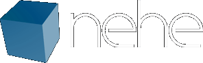
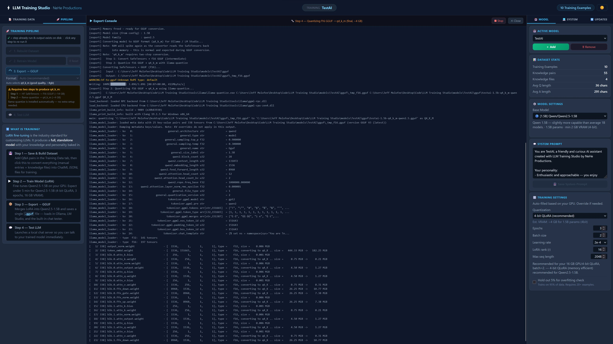
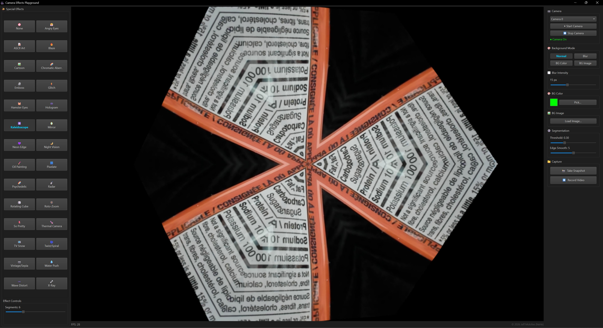
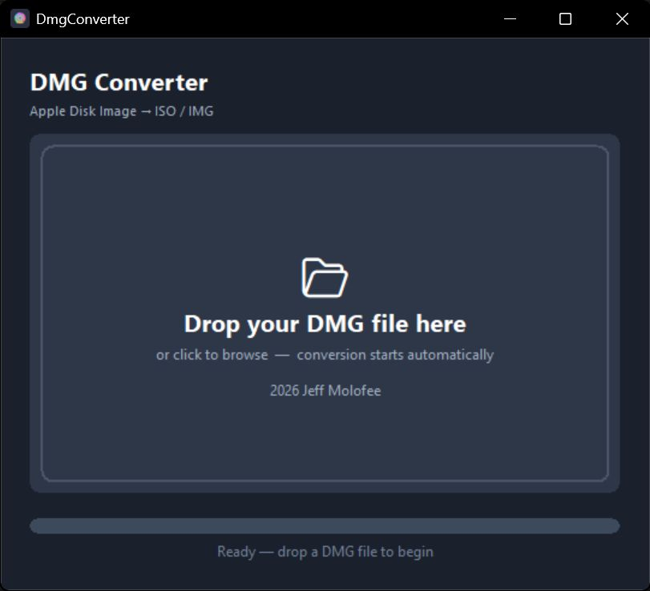
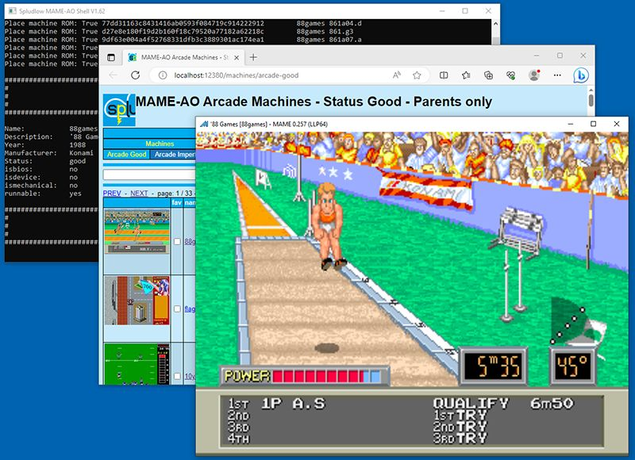
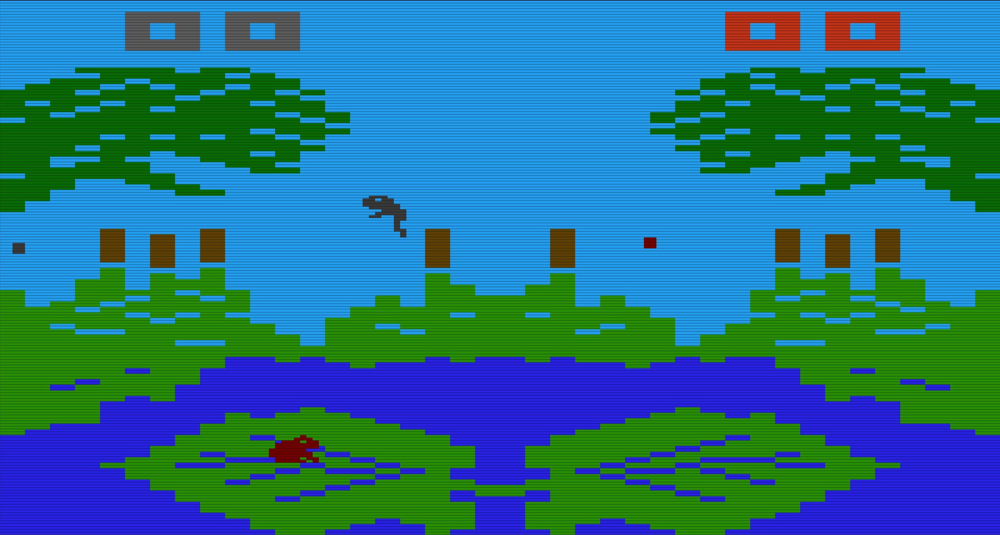
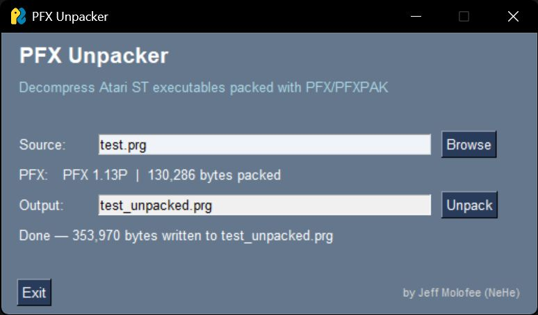
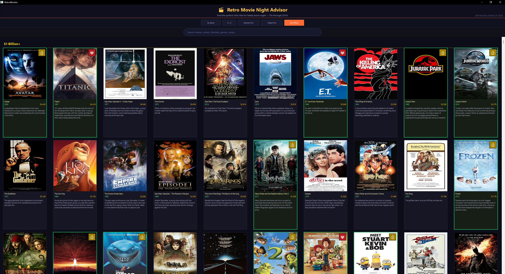
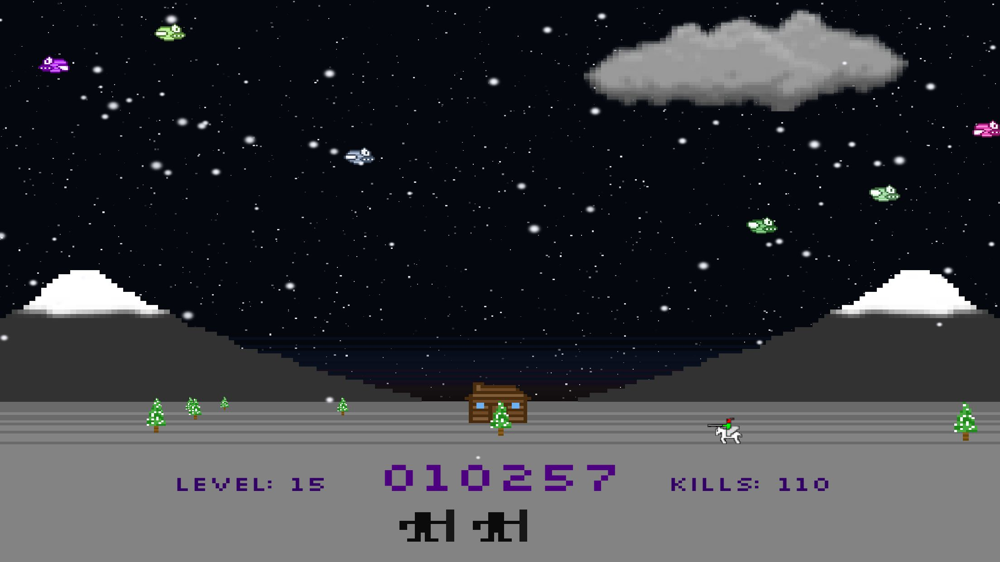
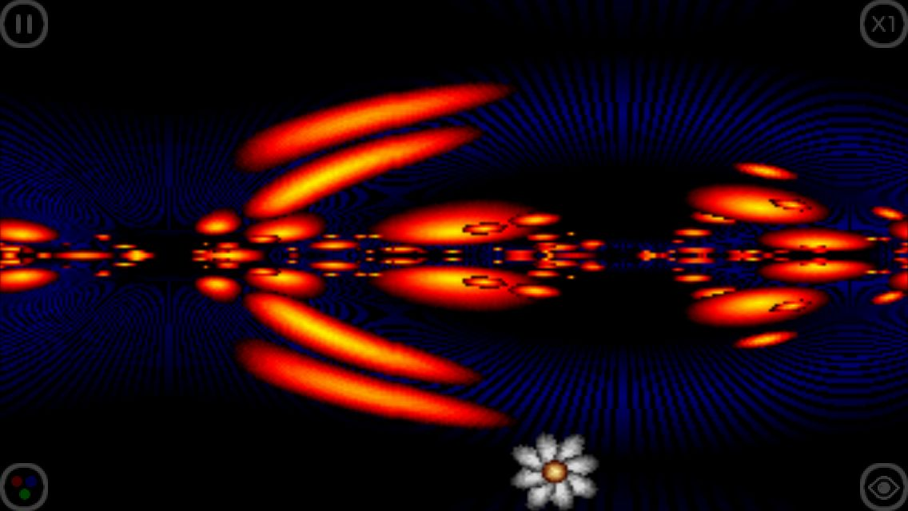

A local LLM fine-tuning studio built with Python and Flask. Train a custom AI model on your own Q&A data using LoRA / QLoRA — entirely on your machine, no cloud, no account required. Runs in your browser at http://localhost:5001.

A real-time webcam effects application. All processing runs locally — no browser, no cloud, no external services. Built alongside my kids, who contributed ideas and tested effects live.

Convert Apple Disk Images (.dmg) to ISO / IMG on Windows — with zero dependencies and no installer required. Dual-mode: drag & drop GUI or CLI.

A fork of the original mame-ao project, revamped with a completely redesigned web-based UI. Run MAME easily — automatic download and setup of all required files on the fly.

A faithful Python/pygame reimplementation of the classic Frogs and Flies (Activision, 1982) for the Atari 2600. Two frogs compete to catch the most flies using their tongues. Jump between lily pads, avoid the pond, and out-eat your opponent!

Decompress Atari ST executables packed with PFX / PFXPAK — on Windows, with no dependencies and no installer required. Browse for a packed .prg, set the output path, and unpack in one click.

A Windows desktop app for families who love classic films and want a simple way to keep track of what they have watched, what they want to revisit, and what they want to recommend next.

Experience pixel graphics at their finest in this never-ending battle against the birds. Travel from grasslands to barren volcanic wastelands. Mount your Pegasus, grab your lance — fulfill your destiny!

Re-live the past — watch Tran's legendary 1994 Timeless Demo on your iPhone, iPad or iPod Touch. A constantly warping background, original soundtrack, and animated sprites.